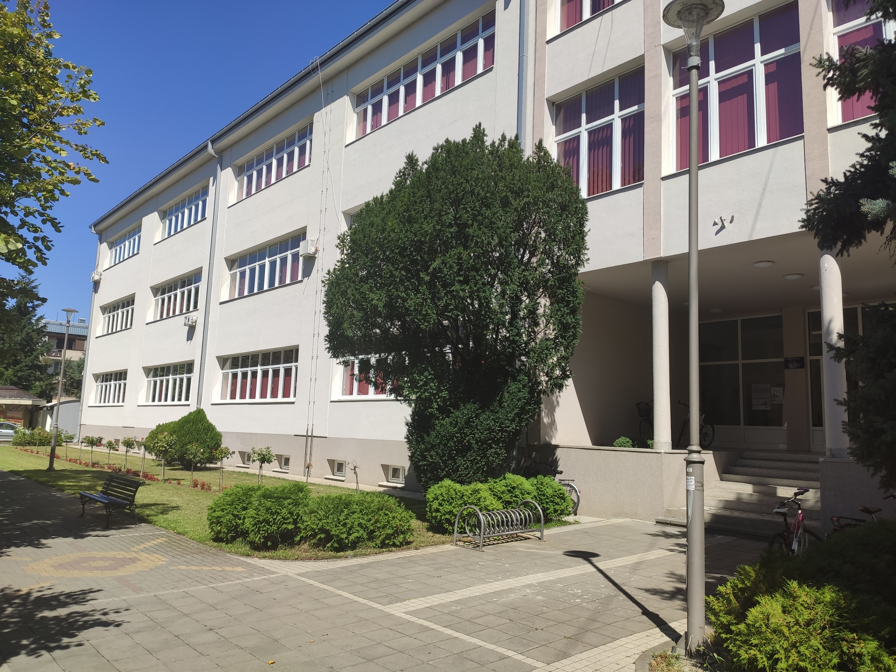
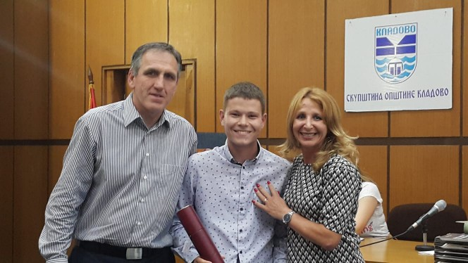
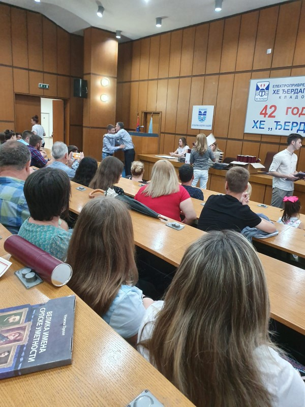

Nikola Bondokic
Osnovne informacije o osobi::
Prezime:
- Bondokic
Ime:
- Nikola
Datum rodjenja:
- 19.10.2000.
Visina:
- 1.70cm
Tezina:
- 80kg
Mali Nikola
Kao mali Nikola je bio plavokosi nestasan decak koji je trckarao svuda naokolo i koji je voleo da ima puno igracka.
Bio je nestasan ali i dobar decak poslusan i znao je sta roditelji zapravo znace, kad god su roditelji nesto rekli
on je to i poslusao. Voleo je imati igracke, sto je i imao, roditelji su mu uvek nesto novo kupovali kako bi on
bio miran. Pored sebe naravno ima i brata Marka sa kojim je provodio mnogo vremena igrajuci se napolju
fudbala, tenisa ili bilo koje dgure decije igre. Kao mali nije imao puno drugara, samo par komsija sa kojima
se stalno druzio. Vreme su provodili igrajuci se igrackama ili neke drustvene igre. Nikola je od malih nogu
voleo fudbal, sto je i poceo trenirati. Fudbal je igrao svaki dan, neprestano bez umora. Tako je i poceo
putovati. Uz pomoc fudbala prvi put je otputovao u Austriju i Bosni i Hercegovinu. Upoznao je mnogo novih
drugara sto iz Srbije, sto iz Francuske, Austrije...
Osnovna skola
Osnovnu skolu zavrsio je u svom rodnom gradu Kladovu. Osnovna skola je trajala 8 godina, kroz koje je
stekao nove drugare i kroz koje je naucio pre svega slova i brojeve a kasnije i mnogo slozenije stvari.
Sa svojim drugarrima nije imao problema sa svima se je druzio i nikada se nije posvadjao. Kao omiljeni
predmeti bili su mu: Biologija, Fizicko i Istorija. Kao ucenik imao je dobre ocene i uvek je imao dobar
uspeh u skoli. Bio je idol nekim profesorima, koje je zadobio svojim dobrim ponasanjem.



Srednja skola
Srednju skolu je takodje zavrio u Kladovu
u gradu i u kome zivi. Srednja skola je za njega bilo nesto novo i nesto uzbudljivo. Na pocetku je srednja skola
delovala mnogo tesko ali tokom vremena je savladao sve predmete i sve je postalo lakse. U srednjoj skoli upoznao
je mnogo novih drugara i takodje su se jako slagali i Nikola je bio u najboljem odeljenju te generacije.
Srednja skola je trajala 4 godine ali Nikola je tokom tog vremena naucio mnogo novih stvari, takodje
upoznao se i sa necim novim a to je programiranje, sto ga je pocelo zanimati. Od tad Nikola je poceo da
se upoznaje sa necim teskim ali za njega zanimljivim, to mu se dopalo i poceo je to da uci. Sto je i
nastaviio kasnije na Fakultetu. Na kraju srednje skole dobio je diplomu, ali Nikola je zeleo da uci dalje
pa je samim tim i upisao fakultet u inistranstvu. Hteo je da uci programiranje, sto je i upisao.
Pored fudbala ovo je druga stvar koja ga je pocela zanimati vrlo brzo.


Fakultet
Fakultet je upisao u inostranstvu, to jest u
Rumuniji. Fakultet jos uvek studira ali uskoro zavrsava, nakon cega ce se zaposliti. Fakultet je upisao iz ljubavi
prema programirnaju sto ga je privuklo. Fakultet je za Nikolu jedan novi capter u zivotu koji je promenio mnogo stvari
kod njega. Nacin zivljenja i nacin na koji se ophodi prema ljduima pa sve do toga kako se Nikola snalazi sam u do tada
stranoj drzavi, takodje je promenilo to da je Nikola poceo dosta da putuje vozem sto do tada nije radio, ali se to njemu mnogo
dopalo. S pocetkom Fakulteta Nikola je bio stanac u drzavi koju do tada nije poznavao, ali s vremenom upoznao je dosta novih drugara
a takodje je upoznao i samu drzavu. Na fakultetu stekao je mnogo novog znanja a i susreo se sa mnogo novih profesora.
Na pocetku je fakultet delovao mnogo tezak, ne zbog gradiva vec zbog situacije koja je zatekla svet a to je COVID-19.
Ova bolest je Nikoli otezala samo ucenje a i sve ostalo, sve je postalo lakse akda je skola pocela uzivo i kada se Nikola
prvi put upoznao sa novim stvarima, a koje su mu se dopale.
UCV Craiova
Str. A. I. Cuza nr.13,
Craiova,
Romania

Sta bih voleo da radim posle Fakulteta?!
Moji posao iz snova koji bih zeleo da radim je da budem programer web sajtova
Kao dete, oduvek sam zeleo da budem fudbaler, ali to se vremenom promenilokad sam poceo da ucim u skoli i kad
i kad sam naucio i upoznao programiranje. Moja ljubav prema programiranju je samo rasla kako sam poceo da ucim
o web dizajnu i kreiranju web stranica. Ovo mi se zaista dopalo i poceo sam da ucim vise o tome, poceo sam da
vezbam i da kreiram sopstvene web sajtove da bih se uvezbao i postao bolji programer. Kada zavrsim fakultet,
zelim da postanem pravi web programer i da radim u nekoj od kompanija koje se time bave. Zeleo bih da naucim
kako je raditi u timu i kako je raditi velike i vazne projekte.
Toliko mi se dopalo programiranje i pravljenje web sajtova, da bih zzbog poslao otisao i u drugu drzavu, kako bih
moago da radim za neku od vecih kompanija. Zeleo bih da upoznam mnogo novih prijatelja koji vole da kreiraju web
stranice kako bismo mogli da podelimo svoje znanje jedni sa drugima.
Fudbal
Od malih nogu sam se zaljubio u fudbal. Kad sam prvi put video fudbalera na terenu, odmah
sam pozeleo da budem tamo. Odmah posle tog trenutka zamolio sam roditelje da me upisu na fudbal
u moji lokalni tim "FK ĐERDAP". Naravno odmah su me roditelji upisali i odmah sam poceo da treniram.
Veoma sam voleo fudbal kao igru i upoznao sam nove prijatelje. Isao sam na svaki trening i fudbal
mi je bio prva "ljubav". Uz pomoc fudbala poceo sam da putujem u druge zemlje kao sto su:
Bosna i Hercegovina, Austrija, Rumunija. Jako mi se dopalo to sto mogu da putujem uz pomoc
fudbala i da radim to sto volim. Posle nekog vremena pozeleo sam da ovo postane moji
zivotni posao i da to radim svakog dana. Bio sam veoma srecan dok sam trenirao i igrao
utakmice sa svojim timom. Igrao sam u raznim kategorijama od malih pionira do prvog tima
gradskog kluba. Nazalost, tokom godina klub je propao i niko vise nije zeleo da trenira.
Bio sam i kapiten tima nekoliko godina, sve do trenutka kada sam morao da biram izmedju
skole i fudbala, sto mi se nije dopalo. Bilo mi je jako tesko da odaberem, ali skolu sam
odabrao jer je bila bezbednija za mene. Sa fudbalom nisam bio siguran da li ce ziveti u nasem
gradu i da li cu uspeti sa njim. Izborom skole oprostio sam se od fudbala i treninga. Nisam
imao vreman da treniram, ali i dalje igram fudbal u slobodno vreme sa prijateljima.
Putovanja
Nisam mnogo putovao kao dete, ali kad sam porastao, poceo sam mnogo da putujem, kako
sa roditeljima, tako i sa prijateljima. Takodje kada sm upisao fakultet u inostranstvu,
poceo sam mnogo da koristim voz kao prevozno sredstvo, sto mi se mnogo dopalo i za mene je
bilo nesto novo. Nisam proputovao ceo svet, ali posetio mnoge zemlje, naravno da se ovde
ne bih zaustavio, voleo bih da putujem mnogo vise i da upoznajem nove ljude i da vidim nove
zemlje. Jednom sam putovao avionom sto bih voleo da uradim ponovo i da ovog puta odem malo dalje
u nove zemlje u koje nikada ranije nisam bio. Moj san je da odem u Dubai, za koji se nadam da ce se i
ostvariti.
Generalni tekst
Kao i svaki decak, volim automobile. Kao dete uvek sam zeleo da odem u salon
automobila gde mogu da vidim sve najprestiznije i najnovije modele automobila.
Moji omiljeni automobil je Range Rover Evoque, koji sam oduvek zeleo da posedujem.
Naravno, ima mnogo superautomobila koje bih voleo da posedujem, ali ipak mislim da je
to previse za mene. Sto se muzike tice, slusam bilo koju vrstu i nemam problema da
slusam strane pesme. Takodje, vise volim da gledam filmove nego da citam knjige,
pa dosta vremena provodim u bioskopu.